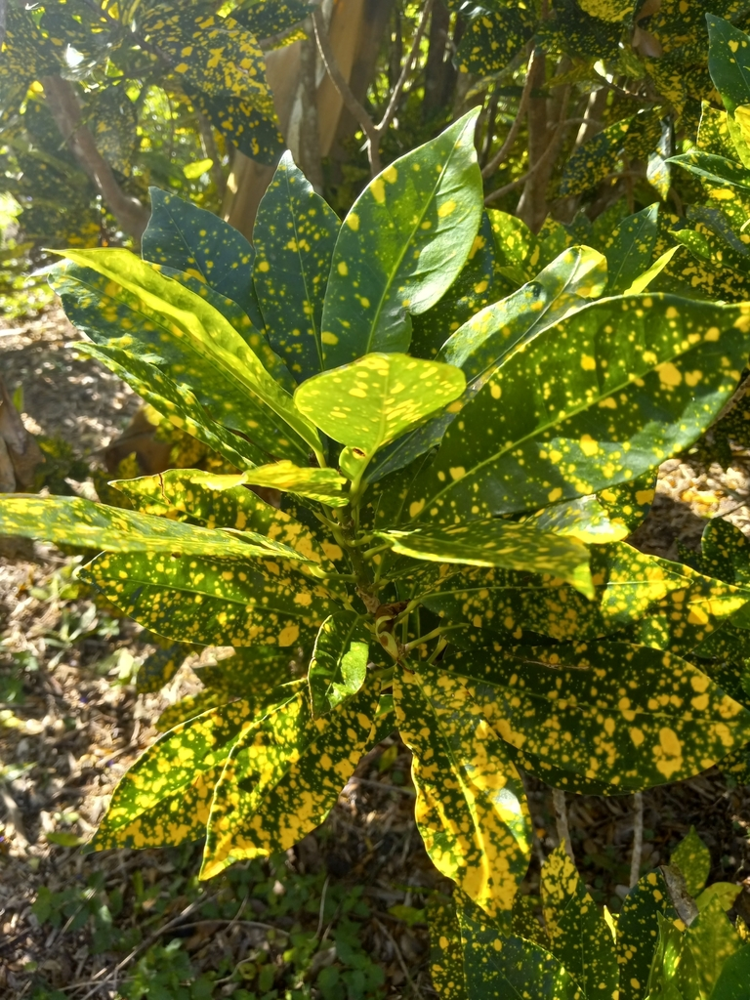

- The color range of the Garden Croton is extraordinary by ornamental plant standards — a single leaf can include red, orange, yellow, green, and purple simultaneously, and no two plants look alike.
- Native to Malaysia and the western Pacific islands, where the wild form is an understated green shrub. All the dramatic colors in cultivation come from centuries of selection and hybridization — there are thousands of named cultivars.
- Despite the common name, this is not related to the weedy Croton genus of North American wildflowers. The name comes from a superficial resemblance.
- Toxic — the sap and seeds contain diterpene esters. One of the more reliably toxic landscape plants in Florida.
Non-native. Native to Malaysia, Indonesia, and the western Pacific islands. Member of Euphorbiaceae — the spurge family, same as Copperleaf, Chenille Plant, and Coral Plant in the collection.
- Crotons are scattered throughout the park, most donated from volunteers' home gardens to anchor areas with year-round color. Near the gazebo, an informal croton showcase has developed — plants of all shapes, sizes, and leaf varieties on display together, a good spot to appreciate how much variety exists within a single species.
- A June 2026 addition fronts the left side of the cactus garden, brought and planted by a volunteer from Sarasota.
Limited direct wildlife value. The flowers are inconspicuous. The toxic sap deters browsing by most animals.
Birds occasionally perch in the dense foliage. The primary ecological role in a Florida landscape is ornamental rather than wildlife-functional.
Inconspicuous, small, white, in spikes above the foliage. Not ornamentally significant.
The display. Extremely variable — leathery, in shapes from oval to strap-like to lobed. Colors include combinations of green, yellow, orange, red, and purple, with patterns from solid to blotched to veined. No two cultivars look alike.
Milky white latex when stems or leaves are broken.
Upright evergreen shrub, 3 to 8 feet. Dense, colorful.
The multicolored leaves are unmistakable — no other common Florida shrub produces this color range on a single leaf. The milky sap from broken stems confirms euphorbia family membership.
Do not eat any part of this plant.
Its sap and seeds contain diterpene esters that cause vomiting, diarrhea, and a burning sensation in the mouth and throat if swallowed, and the sap irritates skin and eyes.
Wash your hands after handling it.
It's toxic to dogs and cats as well, causing drooling, vomiting, and diarrhea. Keep pets away.


- © teschaim (CC-BY-NC), via iNaturalist
- © Randall Carter (CC-BY-NC), via iNaturalist
- © Lilah Thomas (CC-BY-NC), via iNaturalist